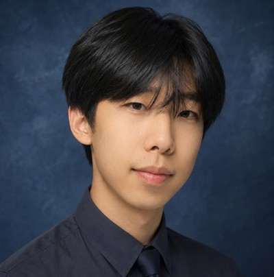
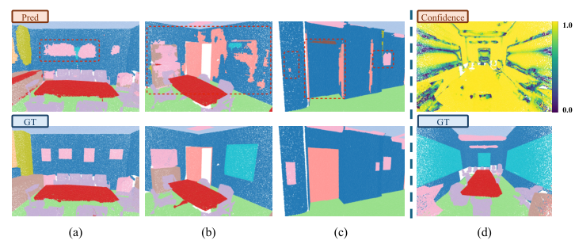
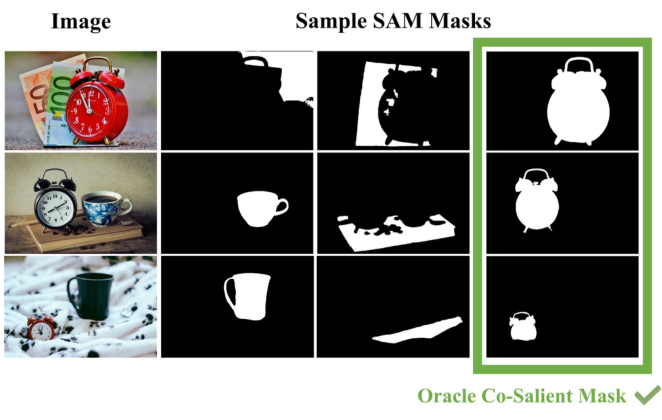

I am a first-year Ph.D. student in Computer and Information Sciences at Temple University, advised by Prof. Longin Jan Latecki. Before that, I received my MRes from Xi'an Jiaotong-Liverpool University, where I worked with Siyue Yu and Jimin Xiao.
Email: shuwei.wu@temple.edu,
wushuwei2000@gmail.com
Google Scholar
I work on computer vision and multimodal learning. Currently I focus on:
| 2026 Aug. | Joined Temple University as a Ph.D. student. |
| 2026 Jun. | Our work Bound3D got accepted by ECCV 2026! |
| 2026 Feb. | Our work TF-SSD got accepted by CVPR 2026! |
 |
Don't Starve the Boundaries: Boundary-Constrained Label Propagation for Weakly Supervised 3D Segmentation
Shuwei Wu, Shuo Jin, Zhijin He, Siyue Yu†, Eng Gee Lim, Qiufeng Wang, Jimin XiaoEuropean Conference on Computer Vision (ECCV), 2026 [Paper] [Project Page] |
 |
TF-SSD: A Strong Pipeline via Synergic Mask Filter for Training-free Co-salient Object Detection
Zhijin He, Shuo Jin, Siyue Yu†, Shuwei Wu, Bingfeng Zhang, Li Yu, Jimin XiaoIEEE/CVF Conference on Computer Vision and Pattern Recognition (CVPR), 2026 [Paper] [arXiv] [Code] |
| 2026.08 – now | Ph.D. in Computer and Information Sciences, Temple University |
| 2024.09 – 2026.07 | MRes in Pattern Recognition and Intelligent Systems, Xi'an Jiaotong-Liverpool University (Distinction) |
| 2026 Fall | Teaching Assistant, CIS 5590 Vision-Language Models, Temple University |